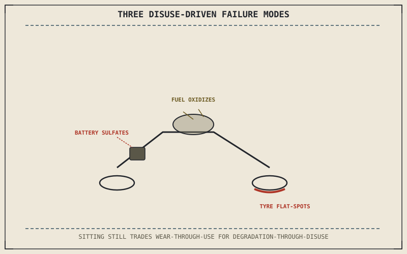

Chapter 10.7 already identified one failure mode this chapter directly extends: a battery left fully discharged for an extended period developing sulfation, a problem caused specifically by disuse rather than operation. Extended storage exposes nearly every system this part has covered to that same disuse-driven degradation, distinct from the wear-through-use most of this part's maintenance schedule has assumed.
Chapter 10.8 closed by naming seasonal and storage maintenance as this chapter's subject, depending on usage patterns rather than a fixed interval alone. This chapter covers it.
Fuel Degrades Sitting Still, Not Just Burning
Fuel left sitting in a tank and fuel system for an extended period gradually degrades through oxidation and evaporation of its more volatile components, eventually leaving behind gum and varnish deposits that can clog the small passages in a carburetor or fuel injector Chapter 2.3's air-fuel matching relies on. This is a genuine chemical aging process, similar in kind to the oil degradation Chapter 10.3 described, except triggered by time and air exposure rather than heat cycling and combustion byproducts — a fuel stabilizer added before storage, or simply running the tank low and refilling with fresh fuel before a storage period ends, both directly address this specific aging mechanism.
Tyres and Suspension Sitting Under Constant Load
Chapter 6.5 established that tyre pressure directly sets contact patch size and the flex that patch experiences, and a motorcycle sitting stationary for weeks or months keeps that same contact area under constant, unchanging load rather than the continuously varying load normal riding produces — this can produce flat spotting, a slight, persistent deformation in the tyre where it's been sitting, along with the same static-load stress Chapter 5.4's suspension sag discussion assumed would be temporary rather than sustained for an extended period. Moving the motorcycle periodically during storage, or supporting it on stands to lift the wheels entirely, both directly counter this sustained-load problem.
Storage doesn't pause wear — it trades wear-through-use for a different set of failure modes entirely: fuel oxidizing while sitting still, a battery sulfating while undrawn, and tyres flat-spotting under a load that never varies the way normal riding load does.

A motorcycle in storage shown with fuel degrading in the tank, a battery slowly discharging toward sulfation, and a tyre developing a flat spot under sustained, unchanging load, each labeled as a disuse-driven failure mode distinct from wear-through-use.
Coming Out of Storage: Re-Verifying, Not Just Restarting
Bringing a motorcycle out of extended storage warrants a more thorough check than an ordinary pre-ride, since several months of disuse-driven degradation may have accumulated across exactly the systems this chapter described — Chapter 10.2's T-CLOCS routine remains the right structure, but each item deserves closer attention than it would after a normal week between rides, since the specific failure modes this chapter described don't announce themselves the way an obvious mechanical fault would.
A Common Misconception, Cleared Up Early
It's a common assumption that a motorcycle sitting unused is simply "safe" from wear, since nothing is moving or generating friction. Storage trades one category of degradation for another, not for an absence of degradation altogether — fuel, battery chemistry, and tyre condition can all measurably decline during a period of complete inactivity, in ways this chapter has traced to specific chemical and mechanical processes rather than treating storage as a neutral pause.
Where This Leads
This part has now covered maintenance system by system. Chapter 10.10 closes the part by bringing all of it together into a single practical tool: a personal maintenance log.
Key Concepts to Remember
- Fuel oxidizes and evaporates during storage, leaving gum and varnish deposits that can clog small fuel-system passages, a chemical aging process distinct from oil's heat-driven degradation.
- A stationary motorcycle keeps tyres under sustained, unchanging load, risking flat spotting distinct from the varying-load wear normal riding produces.
- Coming out of extended storage warrants a more thorough check than an ordinary pre-ride, since disuse-driven degradation doesn't announce itself the way an obvious fault would.
Cross-References
| ← Ch. 10.7 | Identified battery sulfation from extended disuse; this chapter extends that same disuse-driven degradation pattern across fuel and tyres. |
| ← Ch. 6.5 | Established tyre pressure setting contact patch and flex; this chapter shows that same contact patch flat-spotting under sustained, unvarying storage load. |
| ← Ch. 10.2 | Established T-CLOCS as the pre-ride check structure; this chapter applies that same structure more thoroughly when coming out of storage. |
| → Ch. 10.10 | Closes Part X by bringing all of this part's maintenance items together into a personal maintenance log. |